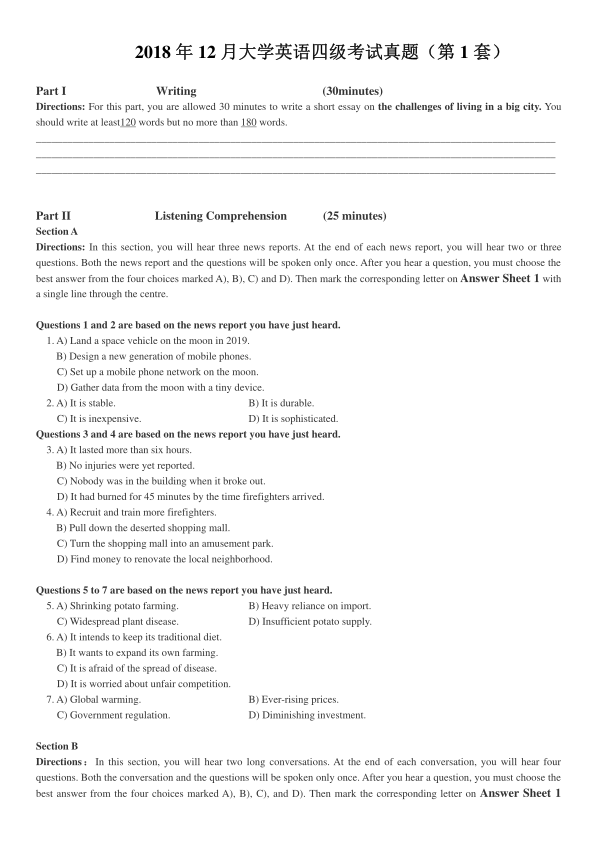
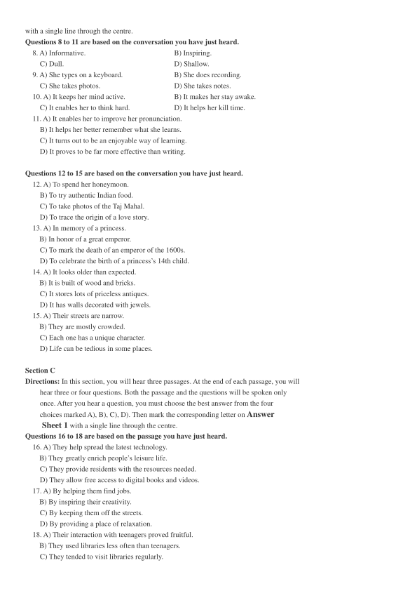
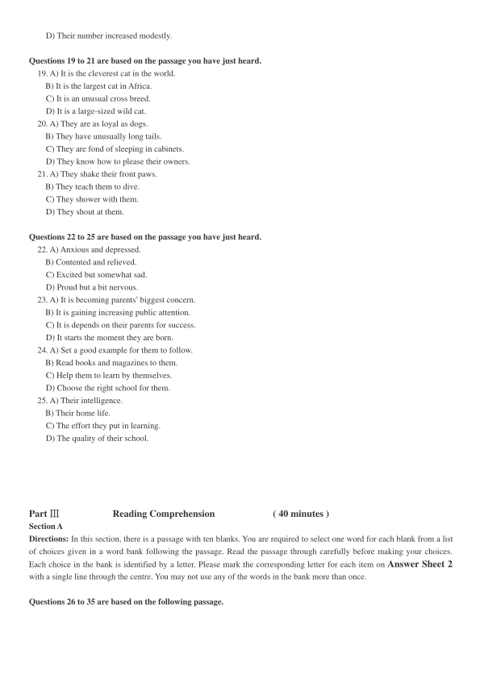
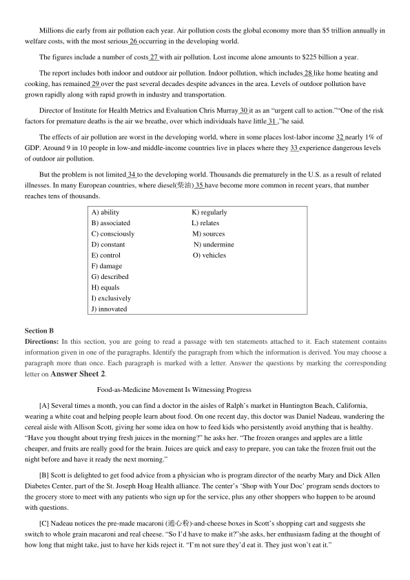
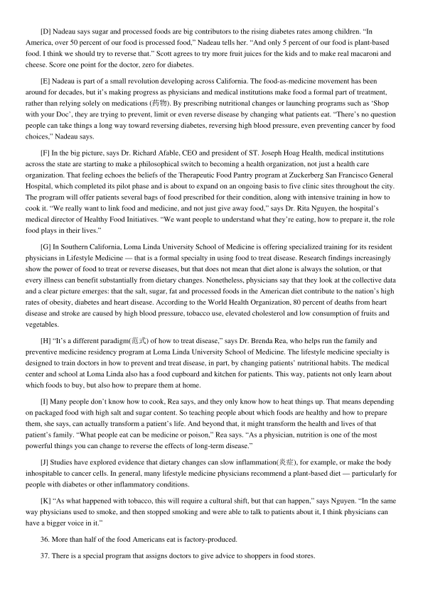
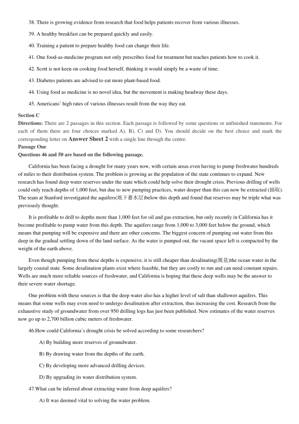
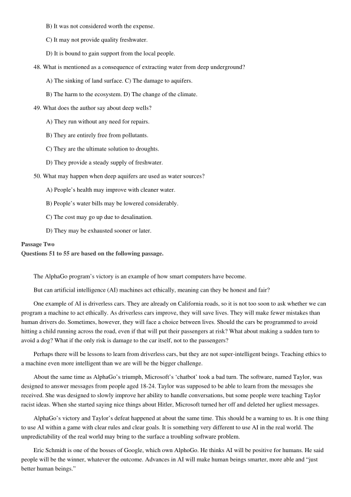
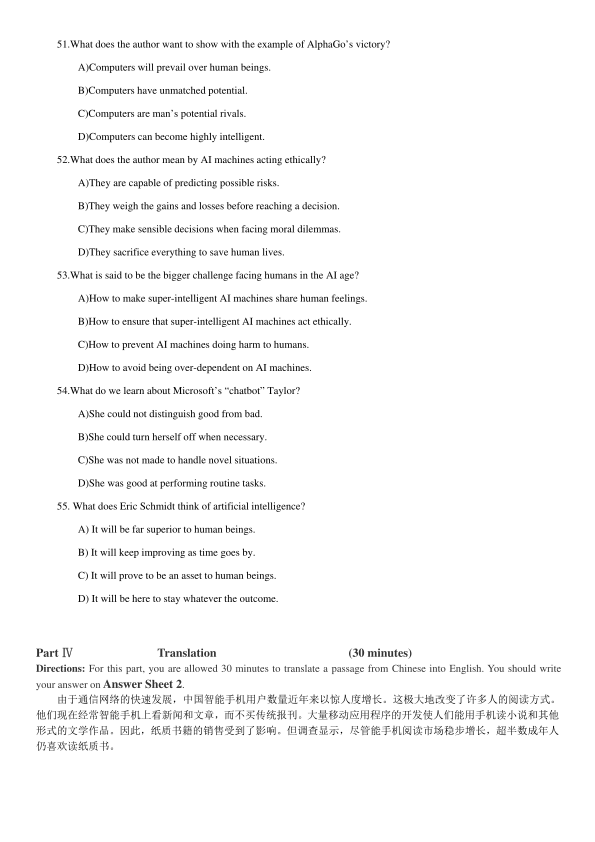

第 1 / 8 页

2018 年12 月大学英语四级考试真题（第1 套）
Part I
Writing
(30minutes)
Directions: For this part, you are allowed 30 minutes to write a short essay on the challenges of living in a big city. You
should write at least120 words but no more than 180 words.
___________________________________________________________________________________________________
___________________________________________________________________________________________________
___________________________________________________________________________________________________
Part II
Listening Comprehension
(25 minutes)
Section A
Directions: In this section, you will hear three news reports. At the end of each news report, you will hear two or three
questions. Both the news report and the questions will be spoken only once. After you hear a question, you must choose the
best answer from the four choices marked A), B), C) and D). Then mark the corresponding letter on Answer Sheet 1 with
a single line through the centre.
Questions 1 and 2 are based on the news report you have just heard.
1. A) Land a space vehicle on the moon in 2019.
B) Design a new generation of mobile phones.
C) Set up a mobile phone network on the moon.
D) Gather data from the moon with a tiny device.
2. A) It is stable.
B) It is durable.
C) It is inexpensive.
D) It is sophisticated.
Questions 3 and 4 are based on the news report you have just heard.
3. A) It lasted more than six hours.
B) No injuries were yet reported.
C) Nobody was in the building when it broke out.
D) It had burned for 45 minutes by the time firefighters arrived.
4. A) Recruit and train more firefighters.
B) Pull down the deserted shopping mall.
C) Turn the shopping mall into an amusement park.
D) Find money to renovate the local neighborhood.
Questions 5 to 7 are based on the news report you have just heard.
5. A) Shrinking potato farming.
B) Heavy reliance on import.
C) Widespread plant disease.
D) Insufficient potato supply.
6. A) It intends to keep its traditional diet.
B) It wants to expand its own farming.
C) It is afraid of the spread of disease.
D) It is worried about unfair competition.
7. A) Global warming.
B) Ever-rising prices.
C) Government regulation.
D) Diminishing investment.
Section B
Directions：In this section, you will hear two long conversations. At the end of each conversation, you will hear four
questions. Both the conversation and the questions will be spoken only once. After you hear a question, you must choose the
best answer from the four choices marked A), B), C), and D). Then mark the corresponding letter on Answer Sheet 1
查看 / 复制本页文字
2018 年12 月大学英语四级考试真题（第1 套） Part I Writing (30minutes) Directions: For this part, you are allowed 30 minutes to write a short essay on the challenges of living in a big city. You should write at least120 words but no more than 180 words. ___________________________________________________________________________________________________ ___________________________________________________________________________________________________ ___________________________________________________________________________________________________ Part II Listening Comprehension (25 minutes) Section A Directions: In this section, you will hear three news reports. At the end of each news report, you will hear two or three questions. Both the news report and the questions will be spoken only once. After you hear a question, you must choose the best answer from the four choices marked A), B), C) and D). Then mark the corresponding letter on Answer Sheet 1 with a single line through the centre. Questions 1 and 2 are based on the news report you have just heard. 1. A) Land a space vehicle on the moon in 2019. B) Design a new generation of mobile phones. C) Set up a mobile phone network on the moon. D) Gather data from the moon with a tiny device. 2. A) It is stable. B) It is durable. C) It is inexpensive. D) It is sophisticated. Questions 3 and 4 are based on the news report you have just heard. 3. A) It lasted more than six hours. B) No injuries were yet reported. C) Nobody was in the building when it broke out. D) It had burned for 45 minutes by the time firefighters arrived. 4. A) Recruit and train more firefighters. B) Pull down the deserted shopping mall. C) Turn the shopping mall into an amusement park. D) Find money to renovate the local neighborhood. Questions 5 to 7 are based on the news report you have just heard. 5. A) Shrinking potato farming. B) Heavy reliance on import. C) Widespread plant disease. D) Insufficient potato supply. 6. A) It intends to keep its traditional diet. B) It wants to expand its own farming. C) It is afraid of the spread of disease. D) It is worried about unfair competition. 7. A) Global warming. B) Ever-rising prices. C) Government regulation. D) Diminishing investment. Section B Directions：In this section, you will hear two long conversations. At the end of each conversation, you will hear four questions. Both the conversation and the questions will be spoken only once. After you hear a question, you must choose the best answer from the four choices marked A), B), C), and D). Then mark the corresponding letter on Answer Sheet 1
第 2 / 8 页

with a single line through the centre.
Questions 8 to 11 are based on the conversation you have just heard.
8. A) Informative.
B) Inspiring.
C) Dull.
D) Shallow.
9. A) She types on a keyboard.
B) She does recording.
C) She takes photos.
D) She takes notes.
10. A) It keeps her mind active.
B) It makes her stay awake.
C) It enables her to think hard.
D) It helps her kill time.
11. A) It enables her to improve her pronunciation.
B) It helps her better remember what she learns.
C) It turns out to be an enjoyable way of learning.
D) It proves to be far more effective than writing.
Questions 12 to 15 are based on the conversation you have just heard.
12. A) To spend her honeymoon.
B) To try authentic Indian food.
C) To take photos of the Taj Mahal.
D) To trace the origin of a love story.
13. A) In memory of a princess.
B) In honor of a great emperor.
C) To mark the death of an emperor of the 1600s.
D) To celebrate the birth of a princess’s 14th child.
14. A) It looks older than expected.
B) It is built of wood and bricks.
C) It stores lots of priceless antiques.
D) It has walls decorated with jewels.
15. A) Their streets are narrow.
B) They are mostly crowded.
C) Each one has a unique character.
D) Life can be tedious in some places.
Section C
Directions: In this section, you will hear three passages. At the end of each passage, you will
hear three or four questions. Both the passage and the questions will be spoken only
once. After you hear a question, you must choose the best answer from the four
choices marked A), B), C), D). Then mark the corresponding letter on Answer
Sheet 1 with a single line through the centre.
Questions 16 to 18 are based on the passage you have just heard.
16. A) They help spread the latest technology.
B) They greatly enrich people’s leisure life.
C) They provide residents with the resources needed.
D) They allow free access to digital books and videos.
17. A) By helping them find jobs.
B) By inspiring their creativity.
C) By keeping them off the streets.
D) By providing a place of relaxation.
18. A) Their interaction with teenagers proved fruitful.
B) They used libraries less often than teenagers.
C) They tended to visit libraries regularly.
查看 / 复制本页文字
with a single line through the centre. Questions 8 to 11 are based on the conversation you have just heard. 8. A) Informative. B) Inspiring. C) Dull. D) Shallow. 9. A) She types on a keyboard. B) She does recording. C) She takes photos. D) She takes notes. 10. A) It keeps her mind active. B) It makes her stay awake. C) It enables her to think hard. D) It helps her kill time. 11. A) It enables her to improve her pronunciation. B) It helps her better remember what she learns. C) It turns out to be an enjoyable way of learning. D) It proves to be far more effective than writing. Questions 12 to 15 are based on the conversation you have just heard. 12. A) To spend her honeymoon. B) To try authentic Indian food. C) To take photos of the Taj Mahal. D) To trace the origin of a love story. 13. A) In memory of a princess. B) In honor of a great emperor. C) To mark the death of an emperor of the 1600s. D) To celebrate the birth of a princess’s 14th child. 14. A) It looks older than expected. B) It is built of wood and bricks. C) It stores lots of priceless antiques. D) It has walls decorated with jewels. 15. A) Their streets are narrow. B) They are mostly crowded. C) Each one has a unique character. D) Life can be tedious in some places. Section C Directions: In this section, you will hear three passages. At the end of each passage, you will hear three or four questions. Both the passage and the questions will be spoken only once. After you hear a question, you must choose the best answer from the four choices marked A), B), C), D). Then mark the corresponding letter on Answer Sheet 1 with a single line through the centre. Questions 16 to 18 are based on the passage you have just heard. 16. A) They help spread the latest technology. B) They greatly enrich people’s leisure life. C) They provide residents with the resources needed. D) They allow free access to digital books and videos. 17. A) By helping them find jobs. B) By inspiring their creativity. C) By keeping them off the streets. D) By providing a place of relaxation. 18. A) Their interaction with teenagers proved fruitful. B) They used libraries less often than teenagers. C) They tended to visit libraries regularly.
第 3 / 8 页

D) Their number increased modestly.
Questions 19 to 21 are based on the passage you have just heard.
19. A) It is the cleverest cat in the world.
B) It is the largest cat in Africa.
C) It is an unusual cross breed.
D) It is a large-sized wild cat.
20. A) They are as loyal as dogs.
B) They have unusually long tails.
C) They are fond of sleeping in cabinets.
D) They know how to please their owners.
21. A) They shake their front paws.
B) They teach them to dive.
C) They shower with them.
D) They shout at them.
Questions 22 to 25 are based on the passage you have just heard.
22. A) Anxious and depressed.
B) Contented and relieved.
C) Excited but somewhat sad.
D) Proud but a bit nervous.
23. A) It is becoming parents’ biggest concern.
B) It is gaining increasing public attention.
C) It is depends on their parents for success.
D) It starts the moment they are born.
24. A) Set a good example for them to follow.
B) Read books and magazines to them.
C) Help them to learn by themselves.
D) Choose the right school for them.
25. A) Their intelligence.
B) Their home life.
C) The effort they put in learning.
D) The quality of their school.
Part Ⅲ
Reading Comprehension
( 40 minutes )
Section A
Directions: In this section, there is a passage with ten blanks. You are required to select one word for each blank from a list
of choices given in a word bank following the passage. Read the passage through carefully before making your choices.
Each choice in the bank is identified by a letter. Please mark the corresponding letter for each item on Answer Sheet 2
with a single line through the centre. You may not use any of the words in the bank more than once.
Questions 26 to 35 are based on the following passage.
查看 / 复制本页文字
D) Their number increased modestly. Questions 19 to 21 are based on the passage you have just heard. 19. A) It is the cleverest cat in the world. B) It is the largest cat in Africa. C) It is an unusual cross breed. D) It is a large-sized wild cat. 20. A) They are as loyal as dogs. B) They have unusually long tails. C) They are fond of sleeping in cabinets. D) They know how to please their owners. 21. A) They shake their front paws. B) They teach them to dive. C) They shower with them. D) They shout at them. Questions 22 to 25 are based on the passage you have just heard. 22. A) Anxious and depressed. B) Contented and relieved. C) Excited but somewhat sad. D) Proud but a bit nervous. 23. A) It is becoming parents’ biggest concern. B) It is gaining increasing public attention. C) It is depends on their parents for success. D) It starts the moment they are born. 24. A) Set a good example for them to follow. B) Read books and magazines to them. C) Help them to learn by themselves. D) Choose the right school for them. 25. A) Their intelligence. B) Their home life. C) The effort they put in learning. D) The quality of their school. Part Ⅲ Reading Comprehension ( 40 minutes ) Section A Directions: In this section, there is a passage with ten blanks. You are required to select one word for each blank from a list of choices given in a word bank following the passage. Read the passage through carefully before making your choices. Each choice in the bank is identified by a letter. Please mark the corresponding letter for each item on Answer Sheet 2 with a single line through the centre. You may not use any of the words in the bank more than once. Questions 26 to 35 are based on the following passage.
第 4 / 8 页

Millions die early from air pollution each year. Air pollution costs the global economy more than $5 trillion annually in
welfare costs, with the most serious 26 occurring in the developing world.
The figures include a number of costs 27 with air pollution. Lost income alone amounts to $225 billion a year.
The report includes both indoor and outdoor air pollution. Indoor pollution, which includes 28 like home heating and
cooking, has remained 29 over the past several decades despite advances in the area. Levels of outdoor pollution have
grown rapidly along with rapid growth in industry and transportation.
Director of Institute for Health Metrics and Evaluation Chris Murray 30 it as an “urgent call to action.”“One of the risk
factors for premature deaths is the air we breathe, over which individuals have little 31 ,”he said.
The effects of air pollution are worst in the developing world, where in some places lost-labor income 32 nearly 1% of
GDP. Around 9 in 10 people in low-and middle-income countries live in places where they 33 experience dangerous levels
of outdoor air pollution.
But the problem is not limited 34 to the developing world. Thousands die prematurely in the U.S. as a result of related
illnesses. In many European countries, where diesel(柴油) 35 have become more common in recent years, that number
reaches tens of thousands.
A) ability
K) regularly
B) associated
L) relates
C) consciously
M) sources
D) constant
N) undermine
E) control
O) vehicles
F) damage
G) described
H) equals
I) exclusively
J) innovated
Section B
Directions: In this section, you are going to read a passage with ten statements attached to it. Each statement contains
information given in one of the paragraphs. Identify the paragraph from which the information is derived. You may choose a
paragraph more than once. Each paragraph is marked with a letter. Answer the questions by marking the corresponding
letter on Answer Sheet 2.
Food-as-Medicine Movement Is Witnessing Progress
[A] Several times a month, you can find a doctor in the aisles of Ralph’s market in Huntington Beach, California,
wearing a white coat and helping people learn about food. On one recent day, this doctor was Daniel Nadeau, wandering the
cereal aisle with Allison Scott, giving her some idea on how to feed kids who persistently avoid anything that is healthy.
“Have you thought about trying fresh juices in the morning?” he asks her. “The frozen oranges and apples are a little
cheaper, and fruits are really good for the brain. Juices are quick and easy to prepare, you can take the frozen fruit out the
night before and have it ready the next morning.”
[B] Scott is delighted to get food advice from a physician who is program director of the nearby Mary and Dick Allen
Diabetes Center, part of the St. Joseph Hoag Health alliance. The center’s ‘Shop with Your Doc’ program sends doctors to
the grocery store to meet with any patients who sign up for the service, plus any other shoppers who happen to be around
with questions.
[C] Nadeau notices the pre-made macaroni (通心粉)-and-cheese boxes in Scott’s shopping cart and suggests she
switch to whole grain macaroni and real cheese. “So I’d have to make it?”she asks, her enthusiasm fading at the thought of
how long that might take, just to have her kids reject it. “I’m not sure they’d eat it. They just won’t eat it.”
查看 / 复制本页文字
Millions die early from air pollution each year. Air pollution costs the global economy more than $5 trillion annually in welfare costs, with the most serious 26 occurring in the developing world. The figures include a number of costs 27 with air pollution. Lost income alone amounts to $225 billion a year. The report includes both indoor and outdoor air pollution. Indoor pollution, which includes 28 like home heating and cooking, has remained 29 over the past several decades despite advances in the area. Levels of outdoor pollution have grown rapidly along with rapid growth in industry and transportation. Director of Institute for Health Metrics and Evaluation Chris Murray 30 it as an “urgent call to action.”“One of the risk factors for premature deaths is the air we breathe, over which individuals have little 31 ,”he said. The effects of air pollution are worst in the developing world, where in some places lost-labor income 32 nearly 1% of GDP. Around 9 in 10 people in low-and middle-income countries live in places where they 33 experience dangerous levels of outdoor air pollution. But the problem is not limited 34 to the developing world. Thousands die prematurely in the U.S. as a result of related illnesses. In many European countries, where diesel(柴油) 35 have become more common in recent years, that number reaches tens of thousands. A) ability K) regularly B) associated L) relates C) consciously M) sources D) constant N) undermine E) control O) vehicles F) damage G) described H) equals I) exclusively J) innovated Section B Directions: In this section, you are going to read a passage with ten statements attached to it. Each statement contains information given in one of the paragraphs. Identify the paragraph from which the information is derived. You may choose a paragraph more than once. Each paragraph is marked with a letter. Answer the questions by marking the corresponding letter on Answer Sheet 2. Food-as-Medicine Movement Is Witnessing Progress [A] Several times a month, you can find a doctor in the aisles of Ralph’s market in Huntington Beach, California, wearing a white coat and helping people learn about food. On one recent day, this doctor was Daniel Nadeau, wandering the cereal aisle with Allison Scott, giving her some idea on how to feed kids who persistently avoid anything that is healthy. “Have you thought about trying fresh juices in the morning?” he asks her. “The frozen oranges and apples are a little cheaper, and fruits are really good for the brain. Juices are quick and easy to prepare, you can take the frozen fruit out the night before and have it ready the next morning.” [B] Scott is delighted to get food advice from a physician who is program director of the nearby Mary and Dick Allen Diabetes Center, part of the St. Joseph Hoag Health alliance. The center’s ‘Shop with Your Doc’ program sends doctors to the grocery store to meet with any patients who sign up for the service, plus any other shoppers who happen to be around with questions. [C] Nadeau notices the pre-made macaroni (通心粉)-and-cheese boxes in Scott’s shopping cart and suggests she switch to whole grain macaroni and real cheese. “So I’d have to make it?”she asks, her enthusiasm fading at the thought of how long that might take, just to have her kids reject it. “I’m not sure they’d eat it. They just won’t eat it.”
第 5 / 8 页

[D] Nadeau says sugar and processed foods are big contributors to the rising diabetes rates among children. “In
America, over 50 percent of our food is processed food,” Nadeau tells her. “And only 5 percent of our food is plant-based
food. I think we should try to reverse that.” Scott agrees to try more fruit juices for the kids and to make real macaroni and
cheese. Score one point for the doctor, zero for diabetes.
[E] Nadeau is part of a small revolution developing across California. The food-as-medicine movement has been
around for decades, but it’s making progress as physicians and medical institutions make food a formal part of treatment,
rather than relying solely on medications (药物). By prescribing nutritional changes or launching programs such as ‘Shop
with your Doc’, they are trying to prevent, limit or even reverse disease by changing what patients eat. “There’s no question
people can take things a long way toward reversing diabetes, reversing high blood pressure, even preventing cancer by food
choices,” Nadeau says.
[F] In the big picture, says Dr. Richard Afable, CEO and president of ST. Joseph Hoag Health, medical institutions
across the state are starting to make a philosophical switch to becoming a health organization, not just a health care
organization. That feeling echoes the beliefs of the Therapeutic Food Pantry program at Zuckerberg San Francisco General
Hospital, which completed its pilot phase and is about to expand on an ongoing basis to five clinic sites throughout the city.
The program will offer patients several bags of food prescribed for their condition, along with intensive training in how to
cook it. “We really want to link food and medicine, and not just give away food,” says Dr. Rita Nguyen, the hospital’s
medical director of Healthy Food Initiatives. “We want people to understand what they’re eating, how to prepare it, the role
food plays in their lives.”
[G] In Southern California, Loma Linda University School of Medicine is offering specialized training for its resident
physicians in Lifestyle Medicine — that is a formal specialty in using food to treat disease. Research findings increasingly
show the power of food to treat or reverse diseases, but that does not mean that diet alone is always the solution, or that
every illness can benefit substantially from dietary changes. Nonetheless, physicians say that they look at the collective data
and a clear picture emerges: that the salt, sugar, fat and processed foods in the American diet contribute to the nation’s high
rates of obesity, diabetes and heart disease. According to the World Health Organization, 80 percent of deaths from heart
disease and stroke are caused by high blood pressure, tobacco use, elevated cholesterol and low consumption of fruits and
vegetables.
[H] “It’s a different paradigm(范式) of how to treat disease,” says Dr. Brenda Rea, who helps run the family and
preventive medicine residency program at Loma Linda University School of Medicine. The lifestyle medicine specialty is
designed to train doctors in how to prevent and treat disease, in part, by changing patients’ nutritional habits. The medical
center and school at Loma Linda also has a food cupboard and kitchen for patients. This way, patients not only learn about
which foods to buy, but also how to prepare them at home.
[I] Many people don’t know how to cook, Rea says, and they only know how to heat things up. That means depending
on packaged food with high salt and sugar content. So teaching people about which foods are healthy and how to prepare
them, she says, can actually transform a patient’s life. And beyond that, it might transform the health and lives of that
patient’s family. “What people eat can be medicine or poison,” Rea says. “As a physician, nutrition is one of the most
powerful things you can change to reverse the effects of long-term disease.”
[J] Studies have explored evidence that dietary changes can slow inflammation(炎症), for example, or make the body
inhospitable to cancer cells. In general, many lifestyle medicine physicians recommend a plant-based diet — particularly for
people with diabetes or other inflammatory conditions.
[K] “As what happened with tobacco, this will require a cultural shift, but that can happen,” says Nguyen. “In the same
way physicians used to smoke, and then stopped smoking and were able to talk to patients about it, I think physicians can
have a bigger voice in it.”
36. More than half of the food Americans eat is factory-produced.
37. There is a special program that assigns doctors to give advice to shoppers in food stores.
查看 / 复制本页文字
[D] Nadeau says sugar and processed foods are big contributors to the rising diabetes rates among children. “In America, over 50 percent of our food is processed food,” Nadeau tells her. “And only 5 percent of our food is plant-based food. I think we should try to reverse that.” Scott agrees to try more fruit juices for the kids and to make real macaroni and cheese. Score one point for the doctor, zero for diabetes. [E] Nadeau is part of a small revolution developing across California. The food-as-medicine movement has been around for decades, but it’s making progress as physicians and medical institutions make food a formal part of treatment, rather than relying solely on medications (药物). By prescribing nutritional changes or launching programs such as ‘Shop with your Doc’, they are trying to prevent, limit or even reverse disease by changing what patients eat. “There’s no question people can take things a long way toward reversing diabetes, reversing high blood pressure, even preventing cancer by food choices,” Nadeau says. [F] In the big picture, says Dr. Richard Afable, CEO and president of ST. Joseph Hoag Health, medical institutions across the state are starting to make a philosophical switch to becoming a health organization, not just a health care organization. That feeling echoes the beliefs of the Therapeutic Food Pantry program at Zuckerberg San Francisco General Hospital, which completed its pilot phase and is about to expand on an ongoing basis to five clinic sites throughout the city. The program will offer patients several bags of food prescribed for their condition, along with intensive training in how to cook it. “We really want to link food and medicine, and not just give away food,” says Dr. Rita Nguyen, the hospital’s medical director of Healthy Food Initiatives. “We want people to understand what they’re eating, how to prepare it, the role food plays in their lives.” [G] In Southern California, Loma Linda University School of Medicine is offering specialized training for its resident physicians in Lifestyle Medicine — that is a formal specialty in using food to treat disease. Research findings increasingly show the power of food to treat or reverse diseases, but that does not mean that diet alone is always the solution, or that every illness can benefit substantially from dietary changes. Nonetheless, physicians say that they look at the collective data and a clear picture emerges: that the salt, sugar, fat and processed foods in the American diet contribute to the nation’s high rates of obesity, diabetes and heart disease. According to the World Health Organization, 80 percent of deaths from heart disease and stroke are caused by high blood pressure, tobacco use, elevated cholesterol and low consumption of fruits and vegetables. [H] “It’s a different paradigm(范式) of how to treat disease,” says Dr. Brenda Rea, who helps run the family and preventive medicine residency program at Loma Linda University School of Medicine. The lifestyle medicine specialty is designed to train doctors in how to prevent and treat disease, in part, by changing patients’ nutritional habits. The medical center and school at Loma Linda also has a food cupboard and kitchen for patients. This way, patients not only learn about which foods to buy, but also how to prepare them at home. [I] Many people don’t know how to cook, Rea says, and they only know how to heat things up. That means depending on packaged food with high salt and sugar content. So teaching people about which foods are healthy and how to prepare them, she says, can actually transform a patient’s life. And beyond that, it might transform the health and lives of that patient’s family. “What people eat can be medicine or poison,” Rea says. “As a physician, nutrition is one of the most powerful things you can change to reverse the effects of long-term disease.” [J] Studies have explored evidence that dietary changes can slow inflammation(炎症), for example, or make the body inhospitable to cancer cells. In general, many lifestyle medicine physicians recommend a plant-based diet — particularly for people with diabetes or other inflammatory conditions. [K] “As what happened with tobacco, this will require a cultural shift, but that can happen,” says Nguyen. “In the same way physicians used to smoke, and then stopped smoking and were able to talk to patients about it, I think physicians can have a bigger voice in it.” 36. More than half of the food Americans eat is factory-produced. 37. There is a special program that assigns doctors to give advice to shoppers in food stores.
第 6 / 8 页

38. There is growing evidence from research that food helps patients recover from various illnesses.
39. A healthy breakfast can be prepared quickly and easily.
40. Training a patient to prepare healthy food can change their life.
41. One food-as-medicine program not only prescribes food for treatment but teaches patients how to cook it.
42. Scott is not keen on cooking food herself, thinking it would simply be a waste of time.
43. Diabetes patients are advised to eat more plant-based food.
44. Using food as medicine is no novel idea, but the movement is making headway these days.
45. Americans’ high rates of various illnesses result from the way they eat.
Section C
Directions: There are 2 passages in this section. Each passage is followed by some questions or unfinished statements. For
each of them there are four choices marked A), B), C) and D). You should decide on the best choice and mark the
corresponding letter on Answer Sheet 2 with a single line through the centre.
Passage One
Questions 46 and 50 are based on the following passage.
California has been facing a drought for many years now, with certain areas even having to pump freshwater hundreds
of miles to their distribution system. The problem is growing as the population of the state continues to expand. New
research has found deep water reserves under the state which could help solve their drought crisis. Previous drilling of wells
could only reach depths of 1,000 feet, but due to new pumping practices, water deeper than this can now be extracted (抽取).
The team at Stanford investigated the aquifers(地下蓄水层)below this depth and found that reserves may be triple what was
previously thought.
It is profitable to drill to depths more than 1,000 feet for oil and gas extraction, but only recently in California has it
become profitable to pump water from this depth. The aquifers range from 1,000 to 3,000 feet below the ground, which
means that pumping will be expensive and there are other concerns. The biggest concern of pumping out water from this
deep in the gradual settling down of the land surface. As the water is pumped out, the vacant space left is compacted by the
weight of the earth above.
Even though pumping from these depths is expensive, it is still cheaper than desalinating(脱盐)the ocean water in the
largely coastal state. Some desalination plants exist where feasible, but they are costly to run and can need constant repairs.
Wells are much more reliable sources of freshwater, and California is hoping that these deep wells may be the answer to
their severe water shortage.
One problem with these sources is that the deep water also has a higher level of salt than shallower aquifers. This
means that some wells may even need to undergo desalination after extraction, thus increasing the cost. Research from the
exhaustive study of groundwater from over 950 drilling logs has just been published. New estimates of the water reserves
now go up to 2,700 billion cubic meters of freshwater.
46.How could California’s drought crisis be solved according to some researchers?
A) By building more reserves of groundwater.
B) By drawing water from the depths of the earth.
C) By developing more advanced drilling devices.
D) By upgrading its water distribution system.
47.What can be inferred about extracting water from deep aquifers?
A) It was deemed vital to solving the water problem.
查看 / 复制本页文字
38. There is growing evidence from research that food helps patients recover from various illnesses. 39. A healthy breakfast can be prepared quickly and easily. 40. Training a patient to prepare healthy food can change their life. 41. One food-as-medicine program not only prescribes food for treatment but teaches patients how to cook it. 42. Scott is not keen on cooking food herself, thinking it would simply be a waste of time. 43. Diabetes patients are advised to eat more plant-based food. 44. Using food as medicine is no novel idea, but the movement is making headway these days. 45. Americans’ high rates of various illnesses result from the way they eat. Section C Directions: There are 2 passages in this section. Each passage is followed by some questions or unfinished statements. For each of them there are four choices marked A), B), C) and D). You should decide on the best choice and mark the corresponding letter on Answer Sheet 2 with a single line through the centre. Passage One Questions 46 and 50 are based on the following passage. California has been facing a drought for many years now, with certain areas even having to pump freshwater hundreds of miles to their distribution system. The problem is growing as the population of the state continues to expand. New research has found deep water reserves under the state which could help solve their drought crisis. Previous drilling of wells could only reach depths of 1,000 feet, but due to new pumping practices, water deeper than this can now be extracted (抽取). The team at Stanford investigated the aquifers(地下蓄水层)below this depth and found that reserves may be triple what was previously thought. It is profitable to drill to depths more than 1,000 feet for oil and gas extraction, but only recently in California has it become profitable to pump water from this depth. The aquifers range from 1,000 to 3,000 feet below the ground, which means that pumping will be expensive and there are other concerns. The biggest concern of pumping out water from this deep in the gradual settling down of the land surface. As the water is pumped out, the vacant space left is compacted by the weight of the earth above. Even though pumping from these depths is expensive, it is still cheaper than desalinating(脱盐)the ocean water in the largely coastal state. Some desalination plants exist where feasible, but they are costly to run and can need constant repairs. Wells are much more reliable sources of freshwater, and California is hoping that these deep wells may be the answer to their severe water shortage. One problem with these sources is that the deep water also has a higher level of salt than shallower aquifers. This means that some wells may even need to undergo desalination after extraction, thus increasing the cost. Research from the exhaustive study of groundwater from over 950 drilling logs has just been published. New estimates of the water reserves now go up to 2,700 billion cubic meters of freshwater. 46.How could California’s drought crisis be solved according to some researchers? A) By building more reserves of groundwater. B) By drawing water from the depths of the earth. C) By developing more advanced drilling devices. D) By upgrading its water distribution system. 47.What can be inferred about extracting water from deep aquifers? A) It was deemed vital to solving the water problem.
第 7 / 8 页

B) It was not considered worth the expense.
C) It may not provide quality freshwater.
D) It is bound to gain support from the local people.
48. What is mentioned as a consequence of extracting water from deep underground?
A) The sinking of land surface. C) The damage to aquifers.
B) The harm to the ecosystem. D) The change of the climate.
49. What does the author say about deep wells?
A) They run without any need for repairs.
B) They are entirely free from pollutants.
C) They are the ultimate solution to droughts.
D) They provide a steady supply of freshwater.
50. What may happen when deep aquifers are used as water sources?
A) People’s health may improve with cleaner water.
B) People’s water bills may be lowered considerably.
C) The cost may go up due to desalination.
D) They may be exhausted sooner or later.
Passage Two
Questions 51 to 55 are based on the following passage.
The AlphaGo program’s victory is an example of how smart computers have become.
But can artificial intelligence (AI) machines act ethically, meaning can they be honest and fair?
One example of AI is driverless cars. They are already on California roads, so it is not too soon to ask whether we can
program a machine to act ethically. As driverless cars improve, they will save lives. They will make fewer mistakes than
human drivers do. Sometimes, however, they will face a choice between lives. Should the cars be programmed to avoid
hitting a child running across the road, even if that will put their passengers at risk? What about making a sudden turn to
avoid a dog? What if the only risk is damage to the car itself, not to the passengers?
Perhaps there will be lessons to learn from driverless cars, but they are not super-intelligent beings. Teaching ethics to
a machine even more intelligent than we are will be the bigger challenge.
About the same time as AlphaGo’s triumph, Microsoft’s ‘chatbot’ took a bad turn. The software, named Taylor, was
designed to answer messages from people aged 18-24. Taylor was supposed to be able to learn from the messages she
received. She was designed to slowly improve her ability to handle conversations, but some people were teaching Taylor
racist ideas. When she started saying nice things about Hitler, Microsoft turned her off and deleted her ugliest messages.
AlphaGo’s victory and Taylor’s defeat happened at about the same time. This should be a warning to us. It is one thing
to use AI within a game with clear rules and clear goals. It is something very different to use AI in the real world. The
unpredictability of the real world may bring to the surface a troubling software problem.
Eric Schmidt is one of the bosses of Google, which own AlphoGo. He thinks AI will be positive for humans. He said
people will be the winner, whatever the outcome. Advances in AI will make human beings smarter, more able and “just
better human beings.”
查看 / 复制本页文字
B) It was not considered worth the expense. C) It may not provide quality freshwater. D) It is bound to gain support from the local people. 48. What is mentioned as a consequence of extracting water from deep underground? A) The sinking of land surface. C) The damage to aquifers. B) The harm to the ecosystem. D) The change of the climate. 49. What does the author say about deep wells? A) They run without any need for repairs. B) They are entirely free from pollutants. C) They are the ultimate solution to droughts. D) They provide a steady supply of freshwater. 50. What may happen when deep aquifers are used as water sources? A) People’s health may improve with cleaner water. B) People’s water bills may be lowered considerably. C) The cost may go up due to desalination. D) They may be exhausted sooner or later. Passage Two Questions 51 to 55 are based on the following passage. The AlphaGo program’s victory is an example of how smart computers have become. But can artificial intelligence (AI) machines act ethically, meaning can they be honest and fair? One example of AI is driverless cars. They are already on California roads, so it is not too soon to ask whether we can program a machine to act ethically. As driverless cars improve, they will save lives. They will make fewer mistakes than human drivers do. Sometimes, however, they will face a choice between lives. Should the cars be programmed to avoid hitting a child running across the road, even if that will put their passengers at risk? What about making a sudden turn to avoid a dog? What if the only risk is damage to the car itself, not to the passengers? Perhaps there will be lessons to learn from driverless cars, but they are not super-intelligent beings. Teaching ethics to a machine even more intelligent than we are will be the bigger challenge. About the same time as AlphaGo’s triumph, Microsoft’s ‘chatbot’ took a bad turn. The software, named Taylor, was designed to answer messages from people aged 18-24. Taylor was supposed to be able to learn from the messages she received. She was designed to slowly improve her ability to handle conversations, but some people were teaching Taylor racist ideas. When she started saying nice things about Hitler, Microsoft turned her off and deleted her ugliest messages. AlphaGo’s victory and Taylor’s defeat happened at about the same time. This should be a warning to us. It is one thing to use AI within a game with clear rules and clear goals. It is something very different to use AI in the real world. The unpredictability of the real world may bring to the surface a troubling software problem. Eric Schmidt is one of the bosses of Google, which own AlphoGo. He thinks AI will be positive for humans. He said people will be the winner, whatever the outcome. Advances in AI will make human beings smarter, more able and “just better human beings.”
第 8 / 8 页

51.What does the author want to show with the example of AlphaGo’s victory?
A)Computers will prevail over human beings.
B)Computers have unmatched potential.
C)Computers are man’s potential rivals.
D)Computers can become highly intelligent.
52.What does the author mean by AI machines acting ethically?
A)They are capable of predicting possible risks.
B)They weigh the gains and losses before reaching a decision.
C)They make sensible decisions when facing moral dilemmas.
D)They sacrifice everything to save human lives.
53.What is said to be the bigger challenge facing humans in the AI age?
A)How to make super-intelligent AI machines share human feelings.
B)How to ensure that super-intelligent AI machines act ethically.
C)How to prevent AI machines doing harm to humans.
D)How to avoid being over-dependent on AI machines.
54.What do we learn about Microsoft’s “chatbot” Taylor?
A)She could not distinguish good from bad.
B)She could turn herself off when necessary.
C)She was not made to handle novel situations.
D)She was good at performing routine tasks.
55. What does Eric Schmidt think of artificial intelligence?
A) It will be far superior to human beings.
B) It will keep improving as time goes by.
C) It will prove to be an asset to human beings.
D) It will be here to stay whatever the outcome.
Part Ⅳ
Translation
(30 minutes)
Directions: For this part, you are allowed 30 minutes to translate a passage from Chinese into English. You should write
your answer on Answer Sheet 2.
由于通信网络的快速发展，中国智能手机用户数量近年来以惊人度增长。这极大地改变了许多人的阅读方式。
他们现在经常智能手机上看新闻和文章，而不买传统报刊。大量移动应用程序的开发使人们能用手机读小说和其他
形式的文学作品。因此，纸质书籍的销售受到了影响。但调查显示，尽管能手机阅读市场稳步增长，超半数成年人
仍喜欢读纸质书。
查看 / 复制本页文字
51.What does the author want to show with the example of AlphaGo’s victory? A)Computers will prevail over human beings. B)Computers have unmatched potential. C)Computers are man’s potential rivals. D)Computers can become highly intelligent. 52.What does the author mean by AI machines acting ethically? A)They are capable of predicting possible risks. B)They weigh the gains and losses before reaching a decision. C)They make sensible decisions when facing moral dilemmas. D)They sacrifice everything to save human lives. 53.What is said to be the bigger challenge facing humans in the AI age? A)How to make super-intelligent AI machines share human feelings. B)How to ensure that super-intelligent AI machines act ethically. C)How to prevent AI machines doing harm to humans. D)How to avoid being over-dependent on AI machines. 54.What do we learn about Microsoft’s “chatbot” Taylor? A)She could not distinguish good from bad. B)She could turn herself off when necessary. C)She was not made to handle novel situations. D)She was good at performing routine tasks. 55. What does Eric Schmidt think of artificial intelligence? A) It will be far superior to human beings. B) It will keep improving as time goes by. C) It will prove to be an asset to human beings. D) It will be here to stay whatever the outcome. Part Ⅳ Translation (30 minutes) Directions: For this part, you are allowed 30 minutes to translate a passage from Chinese into English. You should write your answer on Answer Sheet 2. 由于通信网络的快速发展，中国智能手机用户数量近年来以惊人度增长。这极大地改变了许多人的阅读方式。 他们现在经常智能手机上看新闻和文章，而不买传统报刊。大量移动应用程序的开发使人们能用手机读小说和其他 形式的文学作品。因此，纸质书籍的销售受到了影响。但调查显示，尽管能手机阅读市场稳步增长，超半数成年人 仍喜欢读纸质书。